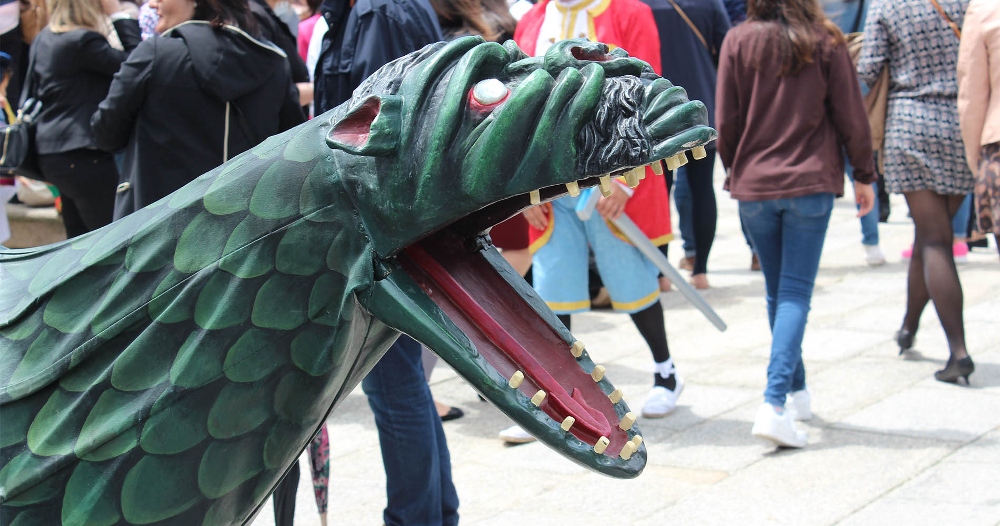
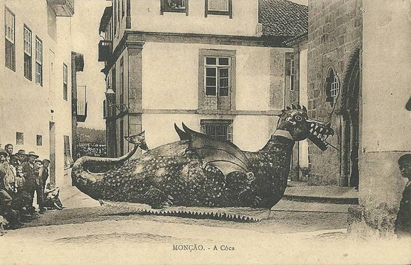
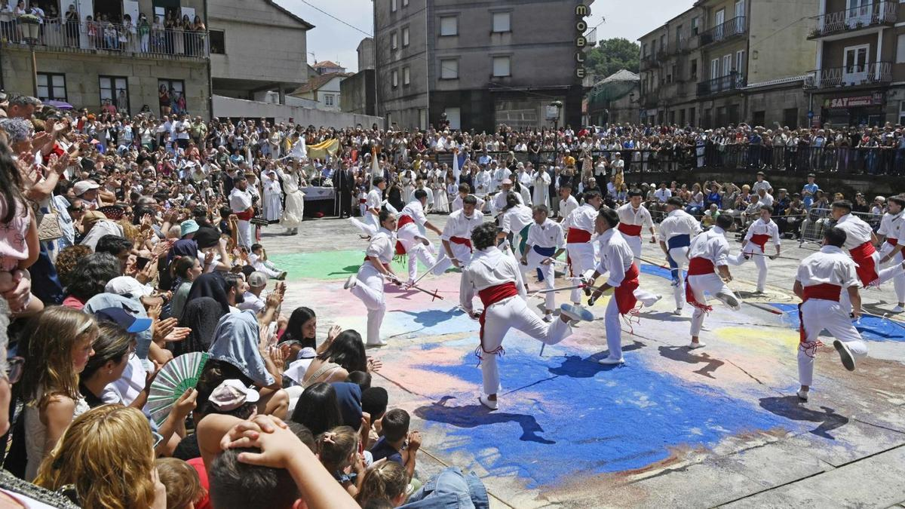
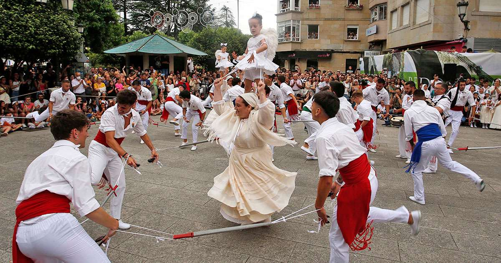

Lendas
A Coca





Ficha rápida da lenda
- Nome: A Coca
- Outros nomes: Tarasca.
- Tipo: Criatura mitolóxica galega.
- Aspecto: Ser híbrido entre dragón e serpe, con ás, catro patas e grandes gadoupas.
- Hábitat: Mar e ríos.
- Simboliza: O mal, o caos e a loita da comunidade fronte ás adversidades.
- Celebración máis coñecida: Festa da Coca de Redondela (Corpus Christi).
A lenda en si
Hoxe atopeime cuns documentos que falaban de como remediar o aire, ou algo así. Non sei como o fago pero sempre me sinto reflectida en todo o que leo. Supoño que a vós tamén vos pasa e por iso me facedes caso, ou non?
Os papeis falaban dese aire coma de algo que se pegaba. Algo malo que che entra no corpo e custa sacar. Tamén falaban de formas de librarse del, pequenos rituais para quitalo.
Recórdame a unha lenda do meu pobo. É bastante sinxela pero faime pensar nisto do aire.
A Coca é unha das criaturas máis coñecidas da mitoloxía galega. Represéntase cun corpo de dragón, unha longa cola de serpe, grandes ás semellantes ás dos morcegos e fortes gadoupas. Tradicionalmente dise que vive nas augas dos ríos ou do mar e que simboliza as forzas do mal, o caos e os perigos que ameazan á comunidade.
Pero hai algo que me chama a atención.
Na lenda do meu pobo, a Coca non nace monstro. Nace da transformación dunha muller ferida.
Dise que nace da dor. Dun dano que non ten cura. Hai cousas que quedan contigo, aínda que todos sigan para adiante.
Curiosamente, esta non é a versión máis coñecida. A maioría da xente conta que a Coca apareceu saíndo do mar e que comezou a levar consigo as mozas máis fermosas de Redondela. Para acabar cos seus ataques, vinte e catro homes enfrontáronse á criatura e conseguiron vencela. Daquela vitoria nacerían, segundo a tradición, a Danza das Espadas e o Baile das Penlas, que aínda hoxe se celebran durante o Corpus Christi.
Cóntase que aparece cando algo vai mal, que anuncia desgrazas. Que hai que combatela.
Así se contou para algúns.
Pero existe outra historia.
Nela, a Coca non chega do mar. É unha moza que, despois dun amor non correspondido, comeza a transformarse pouco a pouco. Primeiro aparecen as ás, despois a cola, e finalmente convértese na criatura que todos temen. As súas bágoas forman o río Alvedosa, que a arrastra ata o mar, completando a metamorfose.
Pero, que pasou antes de que fose monstro?
Quizais por iso esta versión sempre me gustou máis. Obríganos a mirar máis alá da criatura e preguntarnos pola persoa que había antes. Porque, se cadra, a Coca non simboliza só o mal. Tamén pode representar a dor, a perda ou aquelas feridas que nunca chegan a curar.
A Coca non nace así.
Igual somos nós quen a facemos así.
Bibliografía
Mesa, R. (2022, 11 maio). Danza de las espadas y las penlas. Redondela, Pontevedra - Xacobeo. Xacobeo.
https://xacobeo.accioncultural.es/redondela-pontevedra/
Peña, A. P. (2025, 20 outubro). Festa da Coca. Concello de Redondela.
https://redondela.gal/fiesta-de-la-coca/